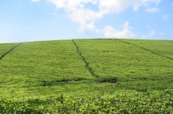
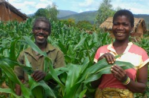
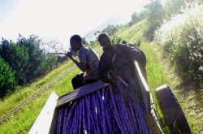

credit: kimyidionne (cc)
credit: Find Your Feet
(cc)
The GDP in Malawi is $2.92 billion. Malawi gets most of it's revenue from agricultural exports. The table below lists products exported and imported.
| Products produced: | Products exported: | Exports to: | Products imported: | Imports from: |
| tobacco sugar cotton tea corn potatoes cassava sorghum coffee rice groundnuts sawmill products cement consumer goods |
tobacco tea sugar cotton coffee peanuts wood product apparel |
Germany Egypt South Africa Zimbabwe United States Russia Netherlands Japan |
food petroleum products semi-manufactures consumer goods transportation equipment |
South Africa China India France Tanzania Mozambique |
Source: ("Background Note: Malawi")